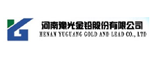

关于思科测控
品质铸就未来，科技创新引领发展。成立于 2008 年，专注流量与物位仪表的研制、开发与生产。
企业简介
国内最大的流量仪表基地之一
河南思科测控技术有限公司，是按照现代企业制度建立的高新技术股份有限公司，公司位于国内最大的流量仪表基地——七朝古都开封经济开发区，占地面积 20000 平方米，是一家专业从事流量、物位等仪表研制、开发、生产的高新技术企业。
公司管理规范，技术力量雄厚，已经通过 ISO9001 质量体系认证。设备先进，检测手段齐全完善，是公司产品和服务质量的可靠保证。产品广泛服务于冶金、石油、电力、化工、环保、水利等众多行业。
- 同时为西门子核心合作伙伴，代理物位、温度、超声波流量计系列产品
- 代理多家进口品牌仪表，满足不同用户需求
- 与多个科研单位、大中型企业建立长期合作关系

我们的团队
一支专注的仪表专业团队
成员拥有多年仪表行业专业技术背景，来自国内仪表行业的一线骨干，平均年龄 38 岁。
专业来自一线的技术背景
成熟充满稳重与创新精神
专注品牌源自客户的信任
38岁团队平均年龄
企业文化
正直、合作、创新
正直
遵守国家法律与公司制度，绝不触犯企业高压线；做人德为先，坚持公正、诚实、守信等为人处事的重要原则；用正直的力量对周围产生积极的影响。
合作
具有开放共赢心态，与合作伙伴共享行业成长；具备大局观，能够与其他团队相互配合，共同达成目标；乐于分享专业知识与工作经验，与同事共同成长。
创新
创新的目的是为客户创造价值；人人皆可创新，事事皆可创新；敢于突破，勇于尝试，不惧失败，善于总结。
发展历程
从开封出发，持续交付
2008 年成立至今的主要里程碑。
-
2008河南思科测控技术有限公司成立
-
2009占地 20000 平方米，集研发、生产、商务服务于一体
-
2010公司分别在北京、武汉设有办事处
-
2011销售业绩年突破 1000 万，广泛服务全国工业客户
-
2012中标湖北黄梅小池项目
-
2013公司产品孔板、超声波液位计中标
-
2014自产传感器开发成功，开发新品阿牛巴流量计
-
2015中标阳煤化工项目 387 台磁翻板液位计与 96 台玻璃板液位计完成交工
-
2016出口孟加拉国项目；晋煤金石化工项目供货 100 台孔板和变送器及 87 台磁翻板液位计
合作行业
服务领域
- 钢铁冶金
- 火力发电
- 石油化工
- 煤化工
- 环保供水
- 市政供热
- 医药食品
- 造纸水泥
合作伙伴
长期服务的工业客户
覆盖冶金、电力、化工、环保等领域的采购方。


